The World Record Film turns the whole history of athletics records into cards you flip through — one film for the men, one for the women, 33 cards each. Every event gets a card, and the rest of the sport is read across all of them at once. This guide walks through every chart and every marker.
Best on a wide screen. This is built for landscape — on a laptop, a tablet, or a phone turned sideways. The charts run the full width of the card and need the room. There's a look at the phone layout at the bottom of this guide.
01 · Getting around
Two films, one control bar
The tabs beside the title — men and women — swap between the two films. Each runs the 21 events in World Athletics' own order, then eleven cards about the sport as a whole, then a final card with both sexes together. Everything else is in the control bar along the bottom.
◀ / ▶| — previous and next card.
▶ Play — advance through the film hands-free. Press again to stop.
↻ — back to the first card.
The counter (12 / 33) — click it for a menu of every card, with how long each event's record has stood. Jump straight to any of them.
⬛ Stats — the same charts, narrowed to the event you're on. Greyed out on the whole-sport cards, which are already that.
? — this guide's short version, plus the keyboard shortcuts.
⛶ — fullscreen. Worth it.
+ — the other experiences in this series.
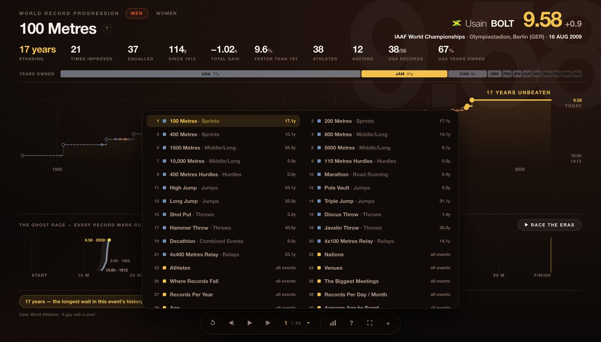
Clicking the counter opens the jump menu: all 33 cards, each with its event group and how long the current record has stood. 17.1y against the 100 Metres, 40.0y against the hammer.
Keyboard:←→ flip cards · Space play or pause · S stats · H help · F fullscreen · Esc close whatever is open. It remembers where you were. Every card has its own address — the bar reads #men-javelin-throw — so reloading puts you back on the same card, and any card can be linked to directly.
02 · The event card
One event, its whole history
Each event gets one card. The top bar names the record that stands today; the staircase underneath is every mark that ever held it.
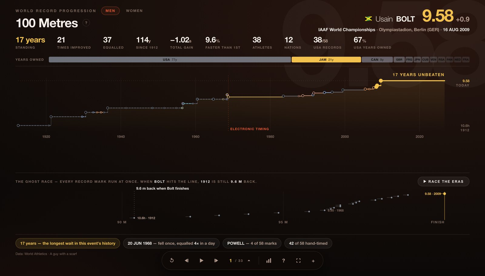
The men's 100 metres. Top right: the standing record, who set it, where and when. The row beneath: how long it has stood, how many times the record was improved, how many times only equalled, the total gain since the first ratified mark, and who has held it.
The staircase
Time runs left to right, the mark runs up. Every card climbs — times are inverted so that better is always higher, whether the event is won by running faster or by throwing further. The width of each step is how long that record survived, so a long flat tread is a record nobody could beat, and the gold plateau on the right is the one still standing.
GoldThe record standing today
Filled dotA mark that beat the record
Hollow, smallerA mark that only equalled it
Red dashesA rule change — the line drops
The bar above the chart is who owned the record, and for how long — the 100 metres belonged to the United States for 77 of its 114 years. The pills below are the anecdotes: the longest wait, the day the record fell more than once, the athlete who set the most of them.
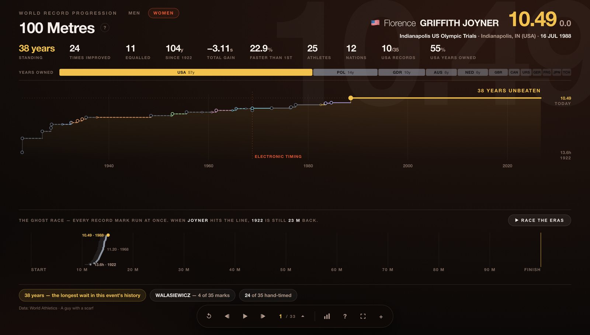
The same event in the other film. The two films are independent — the women tab keeps you on the same event where one exists, and the record here has stood since 1988.
03 · Race & pit
The same history, run as a race
A staircase tells you when. It doesn't tell you how much. So every card has a second chart underneath that puts the marks in the same physical space.
The ghost race — track events
Press ▶ Race the eras and every record mark in the event's history runs at once, from the first ratified time to the one standing now. The gap you see at the finish is the real one: when Bolt crosses the line, the 1912 record holder is still 9.6 metres back.
The pit — jumps and throws
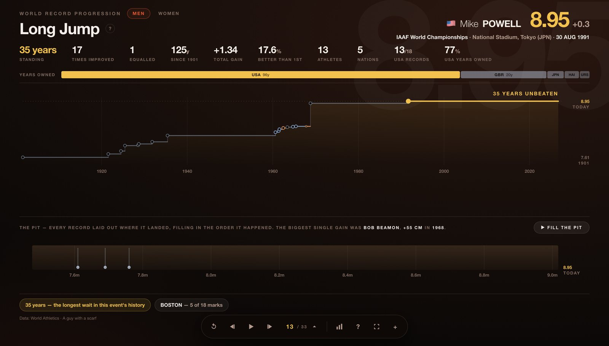
For field events the race becomes a pit: every record laid out at the distance it actually went, oldest at the back. The same idea — the whole history in one physical space — for a sport measured in metres rather than seconds.
The javelin runs twice. The implement was redesigned to fly shorter — 1986 for the men, 1999 for the women — so marks either side aren't comparable. The old-rule marks fade as the new-rule ones arrive, rather than pretending the two belong on one scale.
04 · What the data hides
Why the line sometimes goes backwards
A world record progression looks like it should only ever improve. It doesn't, and the reasons are the interesting part — so every card writes its own explanation from its own data, behind the ? beside the title.
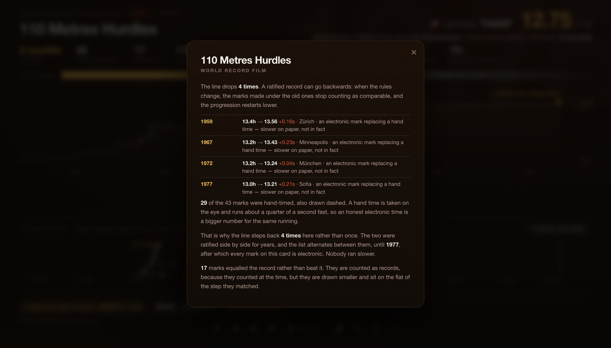
The 110 metres hurdles, explained. Each time the ratified record moved backwards, the card says which one it was and why — here, electronic timing replacing hand times, which reads slower on paper but isn't.
Hand timing. Marks before the 1970s were taken by hand, on the eye, and run about a quarter of a second fast. When the electronic standard arrived the ratified record stepped backwards. Hand times carry an h — 10.0h.
Equalled records. A mark that only levelled the record still counted at the time, so it's here — drawn smaller and hollow, and counted separately. Of the 58 marks in the men's 100 metres, 37 were equals, not improvements.
Rule changes. The javelin redesign, the combined-events scoring tables, and other changes mean marks either side aren't comparable. The line drops and the card says so on the chart.
Nations that no longer exist. URS, GDR, FRG, TCH, YUG have no flag to show, so they appear as their three-letter code. Nothing is retconned to a modern country.
05 · Stats for one event
The chart icon narrows everything to this event
The ⬛ button in the control bar opens the same set of charts, scoped to the event you're on — four ways into one event's history.
NationsAthletesAgeHow long records last
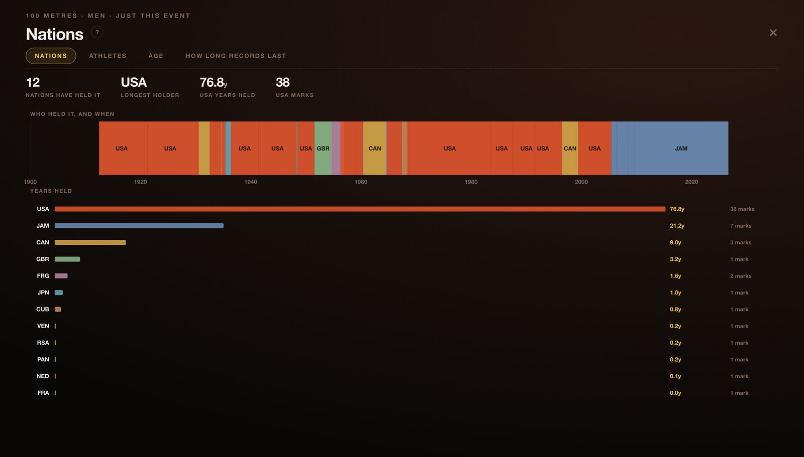
Nations, for the 100 metres alone. Above: who held the record at any moment across the century. Below: the same thing totalled — the United States for 76.8 years and 38 marks, Jamaica 21.2 years and 7.
Use ←→ to walk the tabs while it's open, and Esc or S to close it. On the whole-sport cards the button is disabled — those cards are the stats.
06 · The whole sport
Eleven cards that cut across every event
After the events come the cards that only make sense with all of them at once. Each has its own ? explaining what it shows.
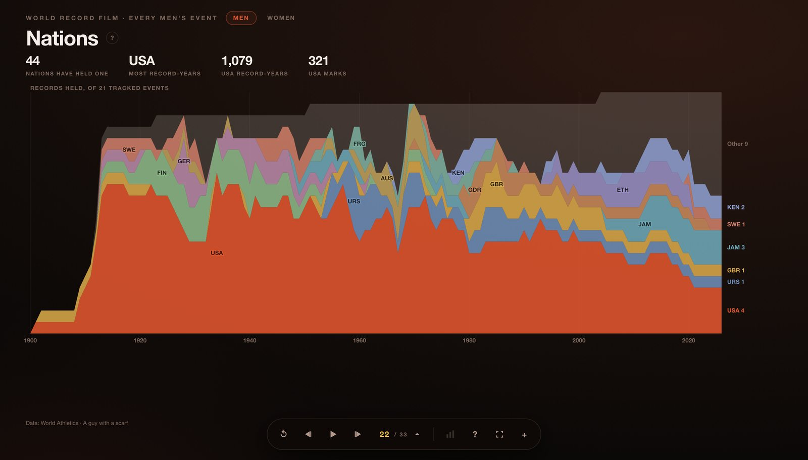
Nations — who has held this film's records, year by year, as a stream.
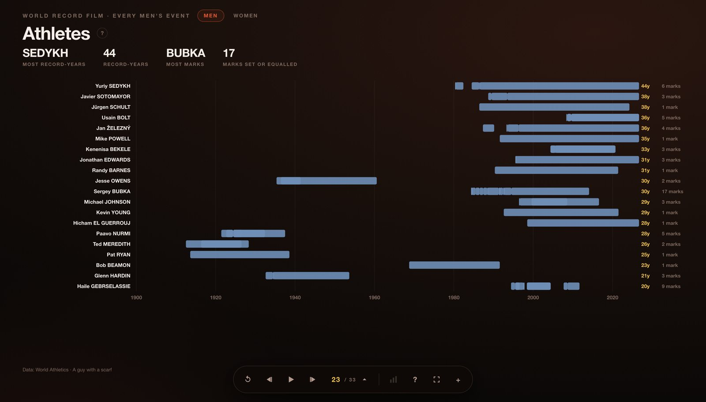
Athletes — who set the most records, and who held one the longest.
Where records fall
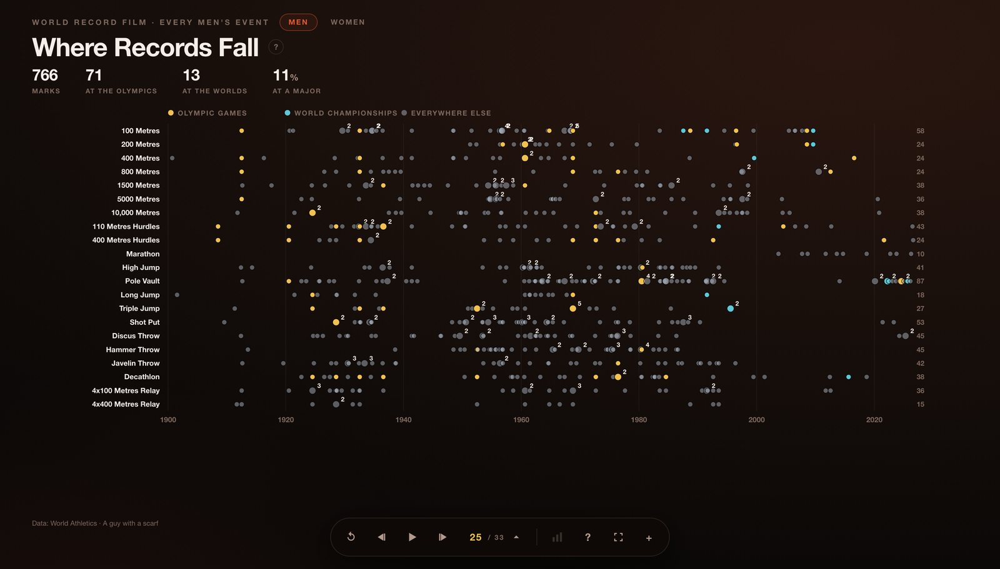
Every record as a dot: discipline down the side, the century across, coloured by the kind of meeting. Gold is the Olympic Games, cyan the World Championships, grey everywhere else — and everywhere else is most of them.
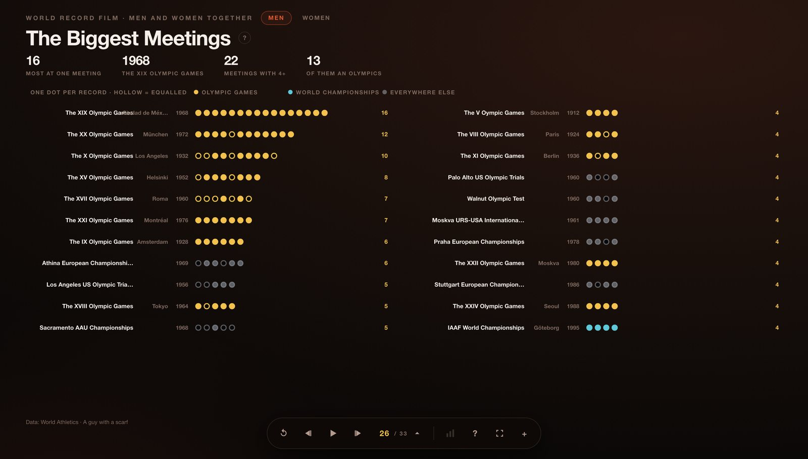
The Biggest Meetings — single meetings ranked by how many records fell there, with the host city.
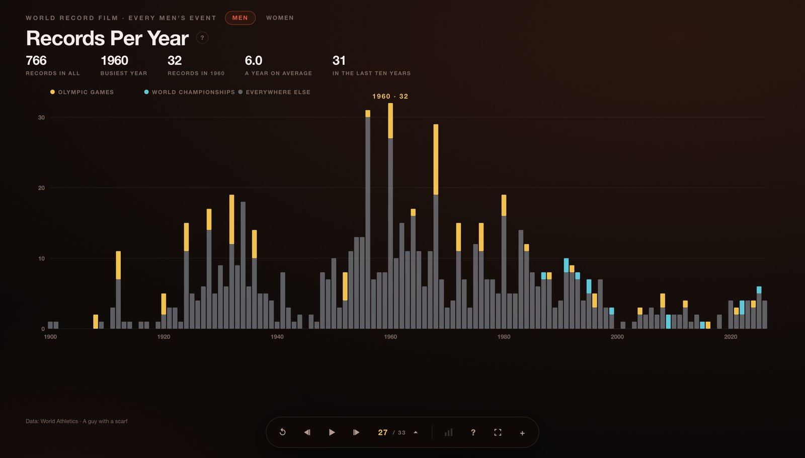
Records Per Year — how many fell each year, stacked by kind of meeting. The long decline is the story.
Records per day / month
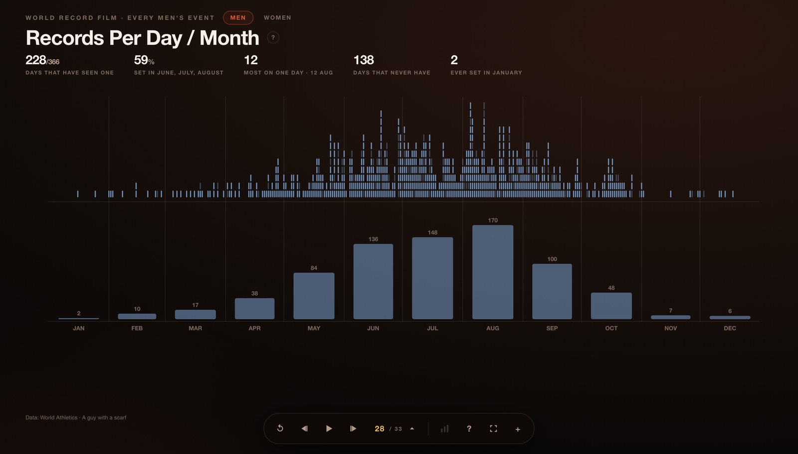
Every mark dropped on the day of the year it was set — a column is one calendar date across all of history, oldest at the top. The month totals below share the same axis. The season is the shape: 83.3% of the men's records were set between May and September, and 138 days of the year have never produced one. Across both films it is 84.5%, and 106 days.
Age
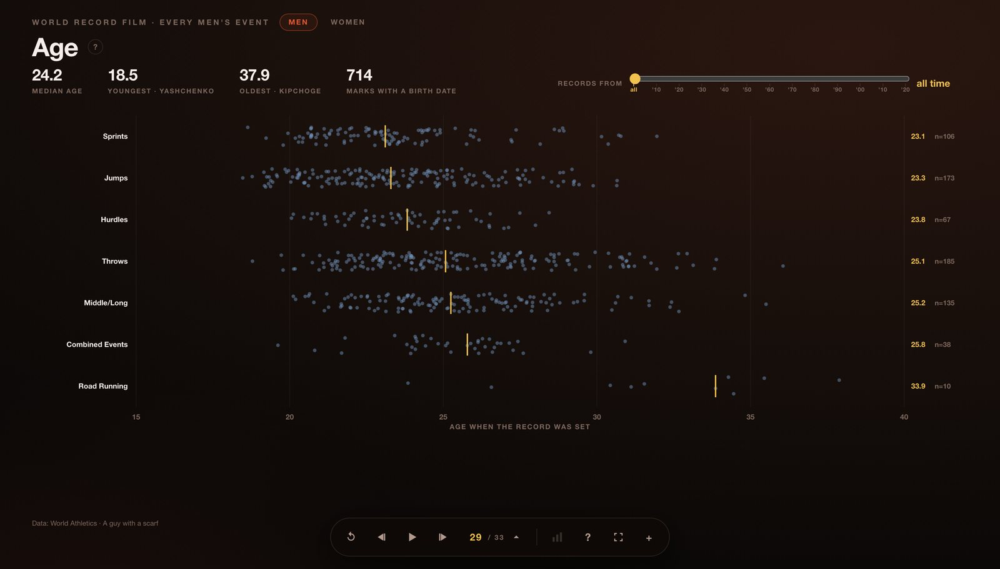
Age — every mark with a birth date on file, plotted by how old the athlete was.
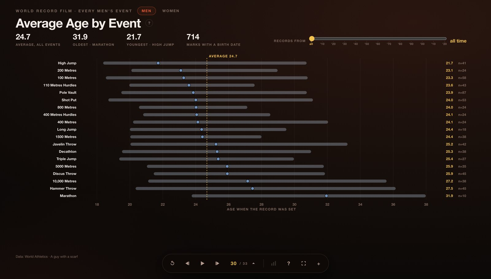
Average Age by Event — youngest event at the top, the bar showing the full range.
Both age cards carry a decade slider at the end of the KPI row. Pick 1990 and the maths uses only records set from that year on. The rows stay in their all-time order while it moves, so what you see change is the age and not the running order.
07 · The closing cards
How long a record lasts
Three cards close each film, and they belong together.
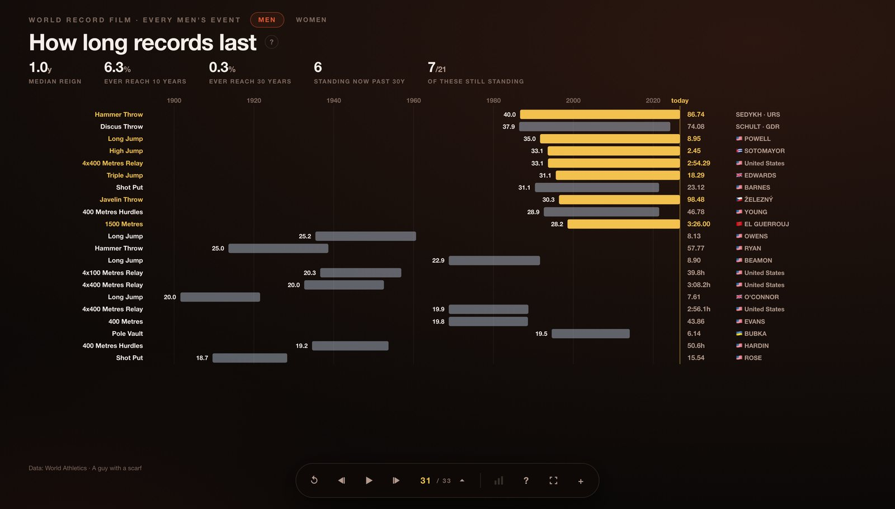
How long records last — the longest reigns there have ever been. Each bar runs from the day the record was set to the day it fell, so a reign has a place in the century as well as a length. Gold means it hasn't fallen.
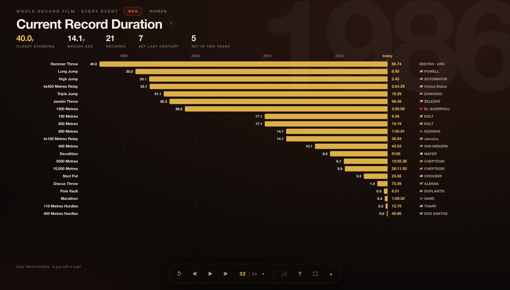
Current Record Duration — the same chart with every bar still running, so they all reach today and the ranking is read off the left-hand edge.
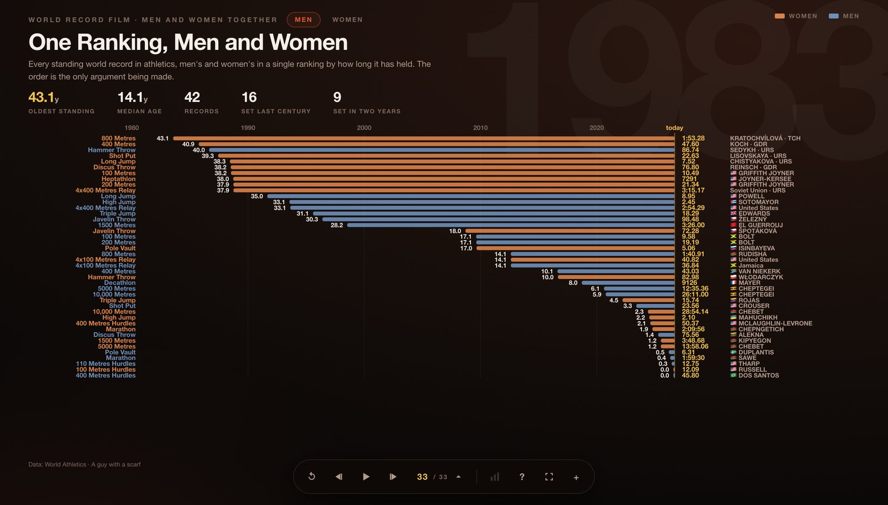
One Ranking, Men and Women — every standing record in athletics, both sexes in a single list by how long it has held. The order is the only argument being made. It closes both films.
08 · Tips & sharing
Small things worth knowing
Hover anything. Every dot, bar and band has a tooltip naming the athlete, the country, the mark, the date and the venue. The charts are built to be interrogated, not just looked at.
Link to a card. The address updates as you move, so athletics.aguywithascarf.com/#women-pole-vault opens exactly there.
Press play and leave it. It makes a decent screen for a bar, a talk or a lobby.
The data refreshes. Marks come straight from World Athletics' own record progressions, so when a record falls the film changes with it.
The + button opens the rest of the series — Formula 1, tennis, the top-5 football leagues, the NFL, the World Cup and the PGA TOUR, all built the same way.
·
On a phone, turn it sideways
This one is honest about its shape: the charts are wide because the data is wide — a century across, or 366 days across — and they don't fold into a column without losing the thing that makes them worth looking at. In landscape a phone works properly. In portrait you'll be scrolling sideways for the right-hand half of every card.
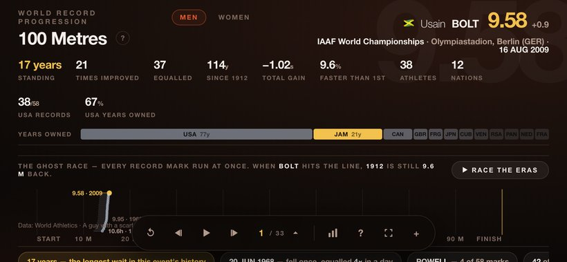
An event card, landscape on a phone.
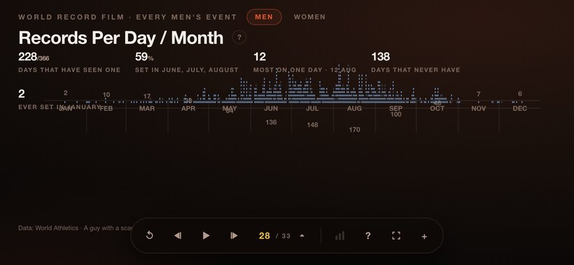
Records per day / month — the whole year still fits.